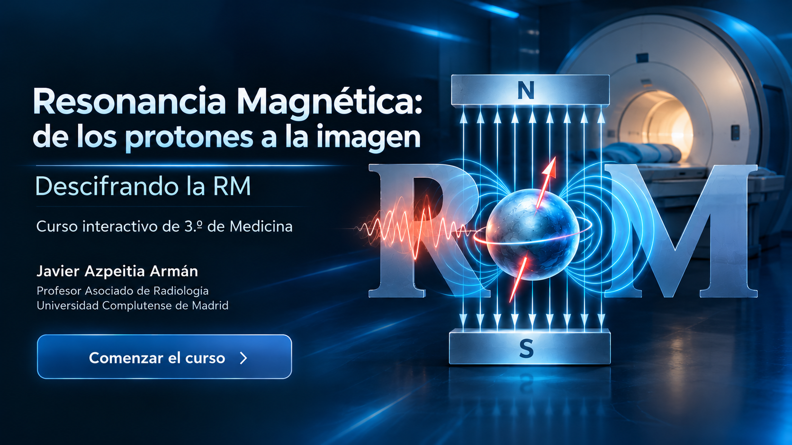
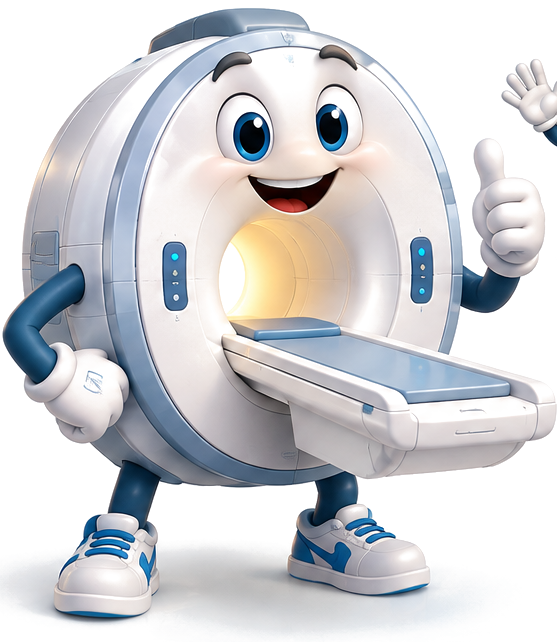

Descifrando la RM · Curso interactivo de 3.º de Medicina


Voy a acompañarte en este recorrido por la resonancia magnética. Mi misión es ayudarte a comprender los conceptos más importantes, recordar lo aprendido y comprobar cuánto sabes.
No te preocupes: iremos paso a paso, desde los protones hasta la formación de la imagen. ¡Vamos allá!